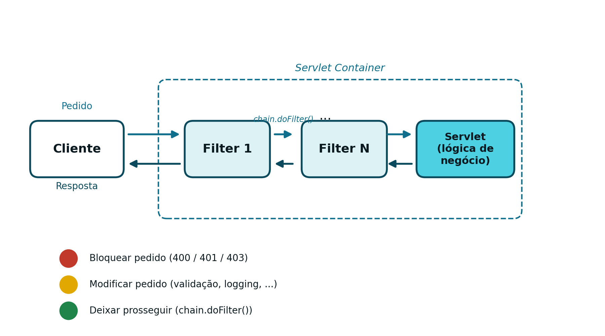
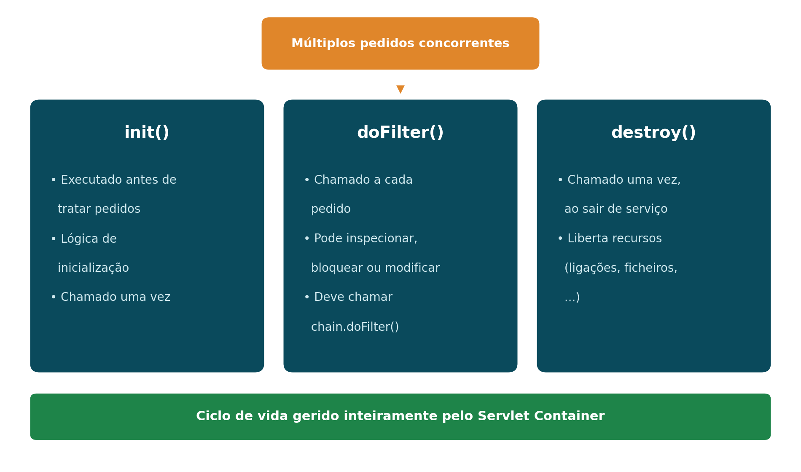
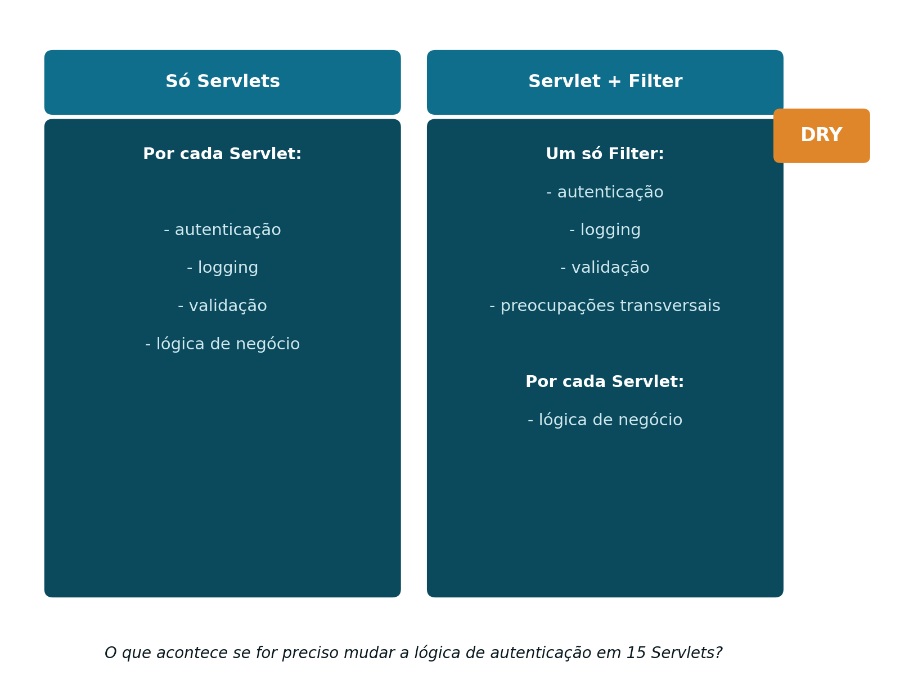

6 Segurança e Filtros
6.1 O Problema: Segurança Repetida em Cada Servlet
Com o que foi apresentado até aqui (ver Capítulo 5), a autenticação está resolvida: a LoginServlet valida as credenciais e grava o utilizador na sessão, e cada endpoint protegido verifica essa sessão no início do seu doGet() ou doPost(). Isto funciona, mas tem um custo escondido: a lógica de autenticação vive, duplicada, dentro de cada Servlet protegida.
Esta duplicação traz consigo vários problemas:
- A mesma verificação de sessão está repetida em todos os endpoints protegidos
- Existe risco real de inconsistência entre essas cópias
- É fácil esquecer a proteção ao criar um novo endpoint
Dito de outra forma, esta duplicação viola o princípio DRY (Don’t Repeat Yourself): uma responsabilidade deveria viver num único sítio, e lógica repetida aumenta o custo de manutenção sempre que essa lógica precisa de mudar. Mais concretamente, este desenho viola o Princípio da Responsabilidade Única: cada Servlet passa a ter duas responsabilidades distintas, a lógica de negócio que lhe é própria, e a lógica de segurança que lhe é imposta. Isto torna as políticas de segurança difíceis de fazer evoluir, e o desenho pouco escalável, quer em número de endpoints, quer em complexidade das regras de acesso.
6.2 Autenticação vs. Autorização
Antes de resolver o problema, vale a pena precisar dois conceitos frequentemente confundidos:
- Autenticação
- Responde a “quem é o utilizador?”. É a verificação de identidade, tipicamente feita no momento do login.
if (username.equals("admin") && password.equals("1234")) {
HttpSession session = request.getSession(true);
session.setAttribute("UserName", username);
}- Autorização
- Responde a “o que é que este utilizador tem permissão para aceder?”. É a verificação de permissões, feita depois de a identidade já estar confirmada.
A autenticação acontece sempre primeiro: não faz sentido verificar permissões de alguém cuja identidade ainda não foi confirmada. Esta distinção reflete-se diretamente nos códigos de estado HTTP usados na resposta (ver Capítulo 3):
401 Unauthorized: o pedido não está autenticado403 Forbidden: o pedido está autenticado, mas não tem permissão para o recurso pedido
6.3 O que é um Filtro
A pergunta que fica por responder é onde deve viver a lógica de segurança: dentro de cada Servlet? Duplicada por todos os endpoints? Ou centralizada num único componente? Segurança é, por natureza, uma preocupação transversal (cross-cutting concern): atravessa toda a aplicação, em vez de pertencer a um único módulo. É exatamente para isto que existe o Filtro.
Um Filtro é um componente do lado do servidor que intercepta pedidos HTTP:
- É executado antes da Servlet de destino
- Pode também ser executado depois da Servlet (sobre a resposta)
- Pode bloquear, redirecionar ou modificar o pedido ou a resposta
Além da autenticação e da autorização, os Filtros são o mecanismo natural para outras preocupações transversais: registo de atividade (logging), CORS (Cross-Origin Resource Sharing), ou validação de entrada. Um Filtro separa estas preocupações da lógica de negócio, que fica exclusivamente na Servlet.
6.4 Onde um Filtro se Situa no Pedido
Um ou mais Filtros podem ser encadeados entre o cliente e a Servlet que trata efetivamente o pedido:
Cliente → Filtro 1 → ... → Filtro N → Servlet (lógica de negócio) → Resposta
Cada Filtro na cadeia tem, essencialmente, três comportamentos possíveis:
- Bloquear o pedido: por exemplo,
400(dados inválidos),401(identidade inválida) ou403(autenticado mas sem permissão) - Modificar o pedido: normalização e validação de dados, registo de atividade, entre outros
- Deixar prosseguir: chamando
chain.doFilter(request, response), passando o controlo ao próximo elemento da cadeia
6.5 Ciclo de Vida de um Filtro
O ciclo de vida de um Filtro segue o mesmo modelo já apresentado para as Servlets (ver Capítulo 4):
init(): executado uma única vez, quando o contentor coloca o Filtro em serviçodoFilter(): executado a cada pedido; pode inspecionar, bloquear ou modificar o pedido e a resposta, e deve chamarchain.doFilter()para continuar a cadeiadestroy(): executado uma única vez, quando o Filtro é retirado de serviço, para libertar recursos
Tal como uma Servlet, existe uma única instância de cada Filtro, partilhada por múltiplos pedidos concorrentes: aplica-se aqui exatamente o mesmo cuidado já referido no Capítulo 3, evitar estado mutável partilhado, e preferir variáveis locais dentro de doFilter().

6.6 Servlet e Filtro: Separação de Responsabilidades
Centralizar a segurança num Filtro reorganiza as responsabilidades de toda a aplicação:

Esta reorganização traz vantagens concretas:
- A lógica de autenticação é escrita uma única vez (princípio DRY)
- A política de segurança é aplicada de forma consistente a todos os endpoints
- Deixa de haver risco de “esquecer” a proteção numa Servlet nova
- Fica clara a separação entre preocupações transversais (Filtro) e lógica de negócio (Servlet)
6.7 Declarar e Implementar um Filtro
Um Filtro declara-se com a anotação @WebFilter, indicando o padrão de URLs a que se aplica:
O padrão "/*" intercepta todos os pedidos, sem exceção. A classe tem de implementar jakarta.servlet.Filter, e o contentor descobre-a automaticamente no momento da implantação (deployment). Tal como as Servlets, um Filtro também pode ser declarado de forma equivalente, embora considerada préterita, no ficheiro web.xml.
Um doFilter() típico, que protege todos os pedidos exigindo uma sessão válida, tem esta forma:
public void doFilter(ServletRequest request,
ServletResponse response,
FilterChain chain)
throws IOException, ServletException {
HttpServletRequest req = (HttpServletRequest) request;
HttpServletResponse res = (HttpServletResponse) response;
HttpSession session = req.getSession(false);
if (session == null || session.getAttribute("UserName") == null) {
res.sendError(HttpServletResponse.SC_UNAUTHORIZED); // 401
return;
}
chain.doFilter(request, response);
}Na prática, nem todos os pedidos devem ser protegidos: o próprio /login, e recursos estáticos como /css, /js ou /images, precisam de ficar acessíveis sem autenticação, sob pena de o utilizador nunca conseguir sequer chegar ao formulário de login.
String path = req.getRequestURI();
boolean isLogin = path.endsWith("/login");
boolean isStatic = path.startsWith(req.getContextPath() + "/css")
|| path.startsWith(req.getContextPath() + "/js")
|| path.startsWith(req.getContextPath() + "/images");
if (isLogin || isStatic) {
chain.doFilter(request, response);
return;
}6.8 Redirecionamento vs. 401: uma Diferença Arquitetural
A forma correta de reagir a uma falha de autenticação depende do tipo de aplicação:
- Numa aplicação Web tradicional, orientada à apresentação (ver Capítulo 1), a resposta natural é um redirecionamento para a página de login (código
302) - Numa API REST, cujo contrato é JSON (ver Capítulos 7 e 8), a resposta correta é devolver
401, sem qualquer redirecionamento
A diferença resume-se a uma frase: numa aplicação Web tradicional, uma falha de autenticação muda a página mostrada; numa API REST, muda apenas o código de estado devolvido. É o cliente, não o servidor, quem decide o que fazer a seguir com esse 401.
6.9 Preparação para uma Segurança Sem Estado
O modelo apresentado neste capítulo assenta inteiramente em sessão: o servidor guarda o estado do utilizador autenticado (HttpSession), e o Filtro verifica essa sessão em cada pedido. Este modelo tem uma limitação: exige que o servidor mantenha memória de cada utilizador, o que se torna problemático assim que existe mais do que uma instância do servidor (ver Capítulo 8).
A alternativa é a autenticação baseada em token: em vez de o servidor guardar sessão nenhuma, o próprio pedido transporta, em cada chamada, toda a informação necessária para se autenticar. Esta mudança, de um modelo com estado (stateful) para um modelo sem estado (stateless), é o tema dos capítulos seguintes.